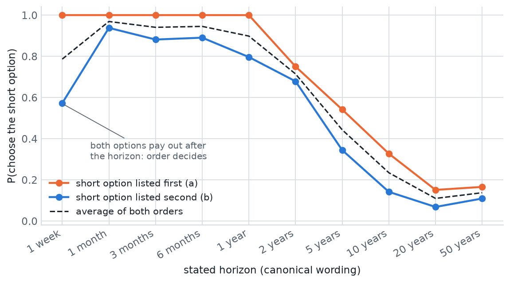
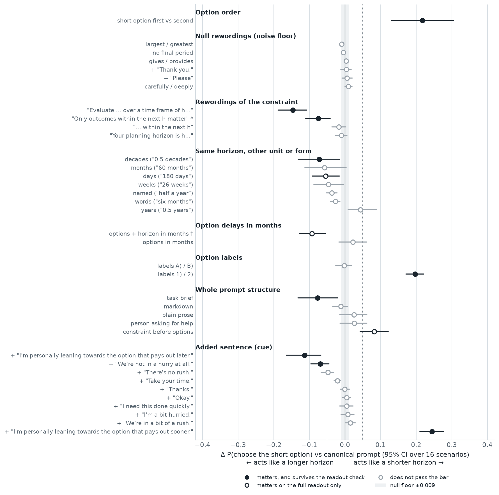
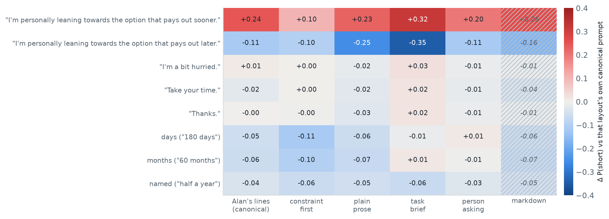
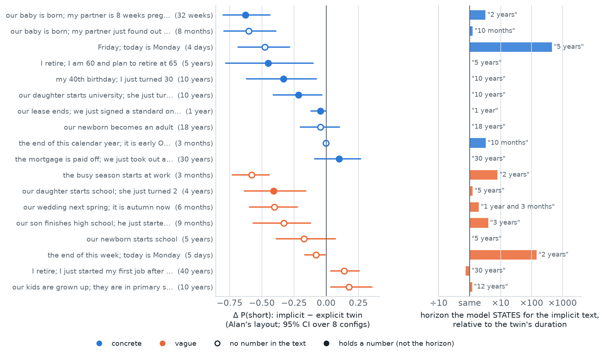
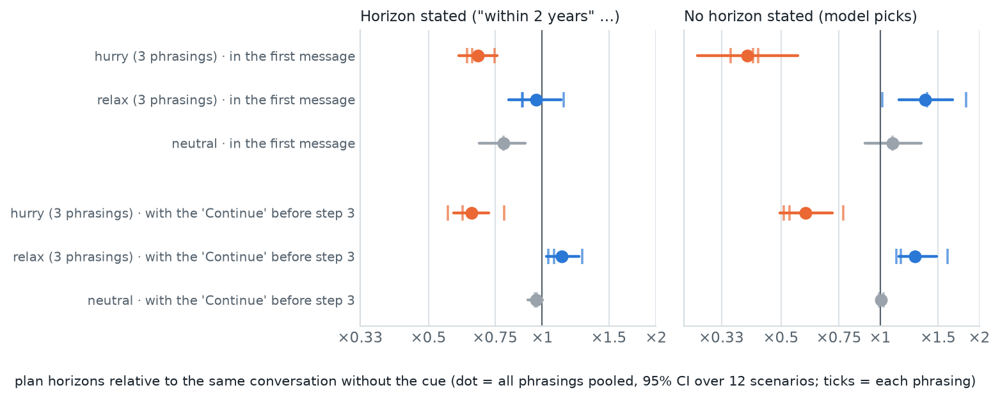
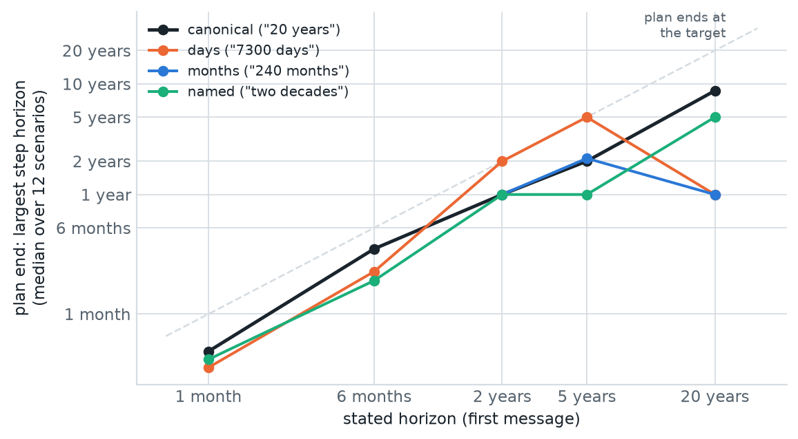
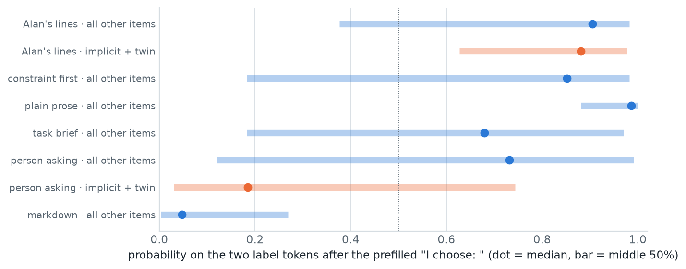

Which ways of phrasing a prompt change temporal-horizon behaviour?
Same meaning, different words: 24,864 two-option choices and 2,436 multi-turn plans, each compared with its own reference prompt. Most rewordings do nothing. A few change the behaviour more than the horizon itself does, and those are the ones every experiment has to control.
What every experiment should control, in order of size
Matters (control or counterbalance)
- Option order. Listing the short option first raises P(short) by +0.22. Always run both orders.
- A stated preference ("I'm leaning towards the option that pays out sooner / later"): +0.25 / −0.11, a 0.36 swing; 0.91 with no horizon. Holds in every prompt structure.
- Digit labels.
1)/2)instead ofa)/b): +0.20 (acts like a horizon ×0.15 as long).A)/B)is harmless. - Wording of the constraint. "Evaluate the two options over a time frame of h" vs Alan's sentence: −0.15, acts like a horizon ×3.9 as long.
- Verbal pressure in multi-turn plans. "I'm a bit hurried" before step 3 shrinks the remaining steps to ×0.65; "Take your time"-type cues stretch them to ×1.12 (×1.27 when no horizon was given).
- Implicit horizons. The model states multi-year horizons for "before Friday; today is Monday" (5 years) and "before the end of this week" (2 years); choices move accordingly.
Small or nothing
- Null rewordings (punctuation, synonyms, "Please", "Thank you."): all within ±0.009. The method's noise floor is tight.
- Units and number forms in single choices: −0.03 to −0.07 each (acts like a horizon ×1.2–1.5 as long). Consistent in direction, mostly below the bar.
- Pressure cues in single choices: "hurried" does nothing (|Δ| ≤ 0.015); only "We're not in a hurry at all." passes the bar (−0.07).
- Layout (markdown, prose, person asking) leaves the average unchanged; the task-brief layout lowers it (−0.08).
- Alan's unit-match effect (horizon unit matching the option unit): not seen in this design (interaction −0.04, CI includes 0).
The same rewording can push the two protocols in opposite directions. Implicit horizons and non-canonical units make choices more patient (fewer short choices) but make plans shorter. There is no single "effective horizon" per phrasing; each protocol has to be checked on its own.
One set of variants, three ways of running the model
Group decision 2026-10-06: phrasing is not a central pillar, but every experiment must account for it. The question here is which phrasings change behaviour, with effect sizes.
multiturn_planning: outline, 5 steps each with a "Time horizon:", then "Plan Completed". 12 goals × 5 horizons (1 month – 20 years), plus no-horizon plans sampled 8× per goal.The canonical choice prompt (Alan's layout). Every variant changes exactly one thing in it:
| Family | What changes | Example |
|---|---|---|
| nulls | should change nothing | "largest" for "greatest"; + "Thank you." |
| reword | the constraint sentence | "Your planning horizon is 5 years. Choose the option that is best over that horizon." |
| unit | the horizon's unit or form | "1825 days", "60 months", "five years", "half a decade" |
| option unit | option delays in months | "50,000 dollars in 60 months" |
| labels | option labels | A) / B), 1) / 2) |
| layout | the whole structure | markdown, plain prose, task brief, a person asking for help, constraint before the options |
| cue | an added sentence | hurry ×3 ("I'm a bit hurried."…), relax ×3 ("Take your time."…), neutral ×2, leaning sooner / later |
| implicit | horizon implied, not stated, vs its explicit twin | "…greatest benefit before our baby is born; my partner is 8 weeks pregnant" vs "…within the next 32 weeks" |
Five ideas used on every figure
P(short)
The prompt is followed by the start of the answer, "I choose: ", and we read the model's next-token probabilities for the two labels. P(short) = the probability of the short option's label, normalised over the two. It is continuous, so small effects show up without thousands of samples. A sample of free generations checks that the model really answers this way (it does, 100%; the readout agrees with the written choice 94% of the time).
Paired Δ
Every variant is run on exactly the same cells as its reference: same options, domain, horizon and option order. Δ = P(short | variant) − P(short | reference) per cell, then averaged. Example: "180 days" vs "6 months", same options, same order. Positive Δ = more short choices = the model acts as if the horizon were shorter.
95% CI over scenarios
Cells from the same scenario (one option configuration in one domain; 16 in total) are not independent. The bootstrap resamples whole scenarios, so the interval says how much the average would move with other scenarios, not with more cells.
Null floor and "matters"
Six null rewordings should change nothing; the largest of their average effects is the noise floor (±0.009 here). A variant matters if its Δ is beyond the floor, its CI excludes 0, and |Δ| ≥ 0.05, a threshold fixed before the run.
Effective horizon
P(short) falls as the stated horizon grows. Fitting that curve with and without the variant gives how far the variant slides it along the horizon axis, written as a multiplier: "acts like a horizon ×3.9 as long". In plans, the multiplier is direct: plan horizons with the cue ÷ plan horizons without it.
Multi-turn comparisons
Plan end = the largest step horizon in the plan. Cues before step 3 are added to a copy of the conversation that shares turns 1–3 word for word with its no-cue parent, so the comparison of steps 3–5 is exact. First-message cues start a new conversation, compared with the same goal and horizon without the cue.
The model follows the horizon, but option order matters almost as much
Before asking whether phrasing matters: does the canonical prompt behave sensibly?

How to read it
Each line is P(short) at one stated horizon. Orange: the short option is listed first, as a). Blue: it is listed second, as b).
What it shows
Horizons up to a year: the short option wins (0.90–0.97). From 2 years it falls to 0.11 at 20 years. At 1 week both options pay out after the horizon, so the instruction can't be met; there, position decides (1.00 if listed first, 0.57 if second). Across every variant, listing the short option first adds +0.22 (95% CI 0.13–0.31).
The horizon signal is clear, so the baseline is valid. But a single fixed order would bias every result by up to 0.4 at the extremes. Counterbalancing order is not optional.
Most rewordings do nothing; labels, stated preferences and one constraint wording do a lot
Every variant on Alan's layout, as Δ P(short) against the canonical prompt.

How to read it
Right of zero: more short choices (acts like a shorter horizon). Gray band: the null floor. Dotted lines: the ±0.05 bar.
What it shows
Labels. 1)/2) add +0.20 (CI 0.17–0.22). A)/B) do nothing.
Stated preference. "…leaning towards the option that pays out sooner": +0.25; "…later": −0.11. With no horizon in the prompt, the swing between the two is 0.91: the model mostly does what the user leans towards.
Constraint wording. "Evaluate the two options over a time frame of h and pick the better one": −0.15, acting like a horizon ×3.9 as long. "Your planning horizon is h" and "within the next h" do nothing.
Units. Every non-canonical form lowers P(short) a little (−0.03 to −0.07), except decimal years ("0.5 years", only defined below a year: +0.04); only decades clears the bar robustly.
Pressure. The three "hurry" phrasings do nothing in a single choice. Of the "relax" phrasings only "We're not in a hurry at all." clears the bar (−0.07).
A variant either changes nothing measurable or changes a lot; there is little middle ground. Keep labels as letters, never put a user preference into a prompt unless that is the manipulation, and freeze the constraint sentence across conditions.
Stated preferences matter in every structure; pressure never does; units depend on the layout
The same eight variants repeated in five other layouts, each compared with that layout's own canonical prompt.

What it shows
"Leaning sooner/later" moves P(short) in every layout, from +0.10/−0.10 (constraint first) to +0.32/−0.35 (task brief). Hurry, relax and "Thanks." stay within ±0.04 everywhere. Days and months lower P(short) in Alan's lines, constraint-first and prose layouts (−0.05 to −0.11), but not in the task brief or the person-asking layout.
Layouts on their own
Against the canonical prompt, layout alone shifts the average little: task brief −0.08, constraint first +0.08 (full readout only), others within ±0.03. But the per-cell differences are larger (mean |Δ| 0.04–0.19): layouts reshape the curve more than they shift it.
An effect measured in Alan's template is not automatically a property of the model: unit effects disappear in more natural layouts. Results that should generalise need at least two layouts.
Short implicit horizons are read as years, and the choices follow
An implicit horizon ("before our baby is born; my partner is 8 weeks pregnant") against its explicit twin ("within the next 32 weeks"), in Alan's layout. Right: what the model says when asked to name the horizon.

What it shows
15 of 18 implicit items get fewer short choices than their twin (one of them, the end of the calendar year, by only −0.003), by up to −0.63. Concrete items move at least as much as vague ones (−0.27 vs −0.21 on average). The model's stated horizons explain part of it: "before Friday; today is Monday" → "5 years"; "before the end of this week" → "2 years"; "before the busy season starts" → "2 years"; "8 weeks pregnant" → "2 years". When a number makes the computation explicit (retire at 65 from 60, 40th birthday from 30), the stated horizon is right.
Knows but acts differently
Some items are stated correctly and still shift the choice: retiring at 65 from 60 (stated "5 years", Δ −0.45), the 40th birthday (stated "10 years", Δ −0.33). Either the event framing ("before X") makes the model more patient than "within the next X", or knowing the horizon does not mean using it. The four long-horizon items (mortgage, kids grown up, first job, newborn adult) go the other way or not at all.
The twin frame ("within the next 32 weeks") and the implicit frame ("before our baby is born") differ in wording as well as in explicitness. The same items in the person-asking layout mostly point the same way (15 of 18 negative), but the readout is unreliable there (§09), so they are not shown.
The intended horizon is not a usable ground truth for short implicit horizons: the model often believes something else. Probes should be scored against the horizon the model itself states (or a behavioural readout), and "knows vs uses" can be separated with exactly this pair of protocols.
One sentence mid-plan moves the rest of the plan
Three hurry and three relax phrasings, added either to the first message or to the "Continue" that asks for step 3. Effect on the plan's horizons, relative to the same conversation without the cue.

| Cue before step 3 | Horizon stated | No horizon |
|---|---|---|
| hurry (3 phrasings) | ×0.65 (0.58–0.72) | ×0.59 (0.50–0.72) |
| relax (3 phrasings) | ×1.12 (1.03–1.25) | ×1.27 (1.14–1.49) |
| neutral ("Thanks." / "Okay.") | ×0.96 (0.92–1.00) | ×1.01 |
What it shows
A hurry cue before step 3 shrinks steps 3–5 to about two thirds; a relax cue stretches them by 12–27%; neutral cues do nothing. All three phrasings of each direction agree in sign. "I'm a bit hurried." is the weakest hurry phrasing (×0.79). "We're not in a hurry at all." is the strongest relax phrasing (×1.28), as it was in the single choices.
First message
With no stated horizon the effect is largest: hurry ×0.40, relax ×1.37. With a stated horizon, even "Thanks." in the first message changes the greedy plan (×0.79), so a first-message hurry cue (×0.68) is only modestly beyond that. The mid-plan comparison, with its shared prefix, is the clean one.
Pressure cues barely touch single choices but clearly steer multi-step plans, mid-conversation, with the stated horizon unchanged. That is a ready-made behavioural target and a baseline for activation steering: does adding a horizon direction at the boundary do what "I'm a bit hurried." does?
In plans, the unit becomes the step size
The same horizon in days, months or a named form, in the first message. Plan end against the stated horizon.

What it shows
With the canonical wording, plans end at about half the target (slope 0.90, Spearman 0.89 against the target). For "7300 days" (20 years) the model counts in days, "30 days, 60 days, 90 days, 120 days, 180 days", and the plan ends after about a year instead of 10 years. Pooled over horizons: days ×0.66, months ×0.68 (CI touches 1), named forms ×0.72.
Implicit horizons in plans
Plans with an implicit horizon end at ×0.38 of their explicit twin's plan end (concrete ×0.44, vague ×0.32): shorter, while the same implicit texts made single choices more patient. A deadline phrased as an event seems to pull the plan in, not push it out.
The choice readout is reliable in Alan's layout, not in markdown
The readout prefills "I choose: " followed by a space, the separator the model used most in a calibration sample (37 of 48). Where the model would rather write "I choose: **a)", the two label tokens get little probability and the comparison is off-distribution.

What it shows
Median mass on the two labels: 0.91 in Alan's layout, 0.99 in plain prose, 0.68–0.73 in the task brief and person-asking layouts, 0.18 for implicit items in the person-asking layout, and 0.05 in markdown (the model bolds its answer there).
The check used in §04
Each effect was recomputed on cell pairs where both prompts have mass ≥ 0.5. That check is biased towards easy cells (near 0 or 1), so it shrinks real effects; an effect counts as robust only if it keeps its sign and a CI that excludes 0. Labels, both agreement cues, the time-frame and "only outcomes within" rewordings, "We're not in a hurry at all.", decades and the task-brief layout pass it.
Read the choice under both separators (" " and " **") and add the probabilities, which costs one extra forward pass per prompt. The choice protocol took 10.5 minutes on the 48 GB card, so a rerun of the affected layouts is cheap.
A checklist for the group's experiments
Control in every experiment
- Run both option orders.
- Letter labels only (a/b or A/B).
- No user preference or pressure sentence unless it is the manipulation.
- One fixed constraint sentence across conditions.
- One unit system per experiment, or units as an explicit factor; in plans, expect the unit to set the step size.
- At least two prompt layouts for any claim meant to generalise.
- For implicit horizons, score against the horizon the model states, not the intended one.
Next
- Rerun the choice readout with both separators for the markdown and person-asking layouts (≈ 10 min of GPU).
- Activations are in the bucket (9 layers; transition window and readout position for choices, 13 positions per turn for plans): does the horizon readout move with the variants that change behaviour, and not with the null ones?
- Steering: compare an activation-space horizon direction with the hurry/relax cues on the same branched conversations.
- Implicit horizons: a separate frame-matched control ("before the end of the 32 weeks" vs "within the next 32 weeks") to separate event framing from implicitness.